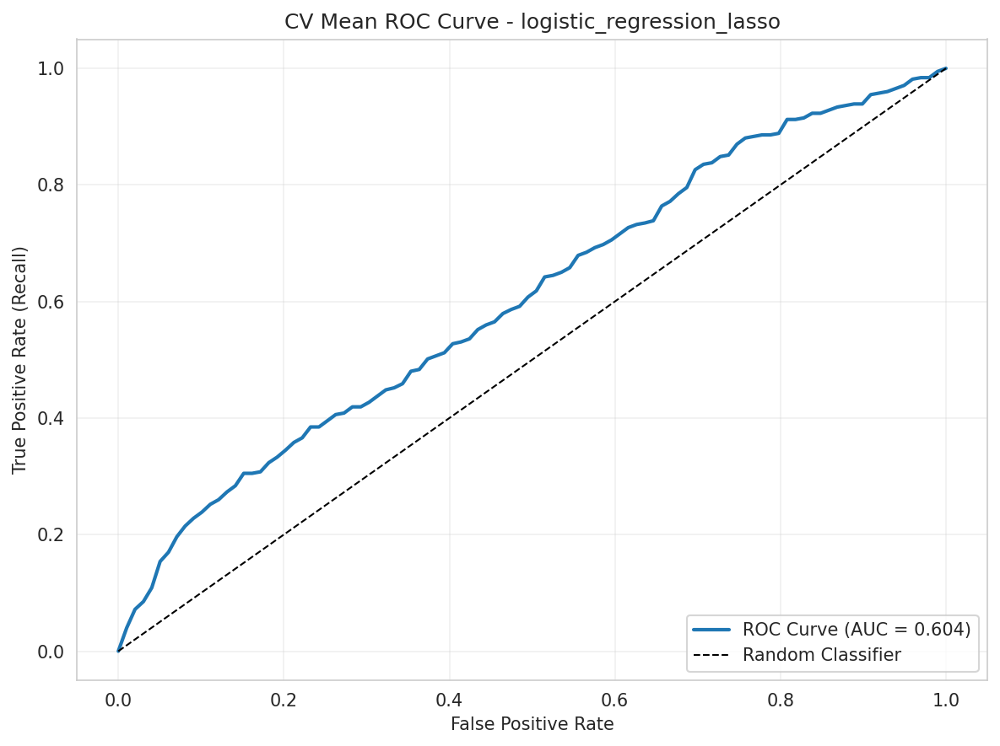
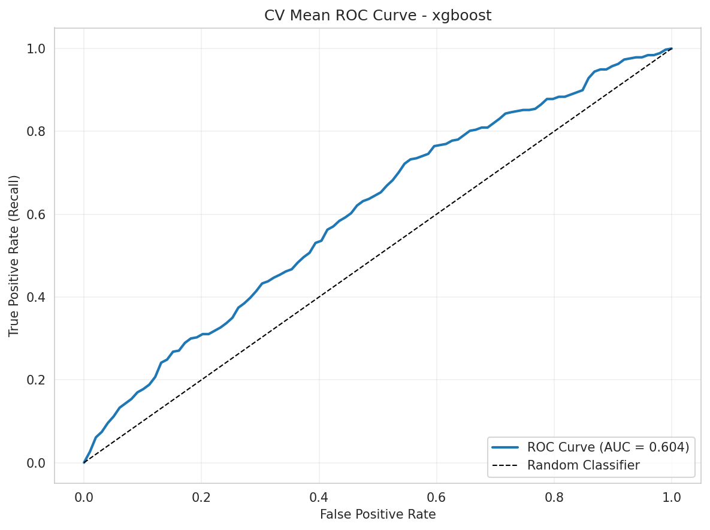

Comparativa visual de curvas ROC entre contendientes top del Exp4
| Modelo | AUC ROC | Delta vs catboost |
|---|---|---|
| catboost | 0.6209 | 0.0000 |
| logistic_regression_lasso | 0.6043 | -0.0166 |
| xgboost | 0.6040 | -0.0169 |


Con el mismo set podado, catboost mantiene ventaja en AUC. Esta comparativa de curvas ROC muestra el comportamiento relativo de dos contendientes top frente al ganador.